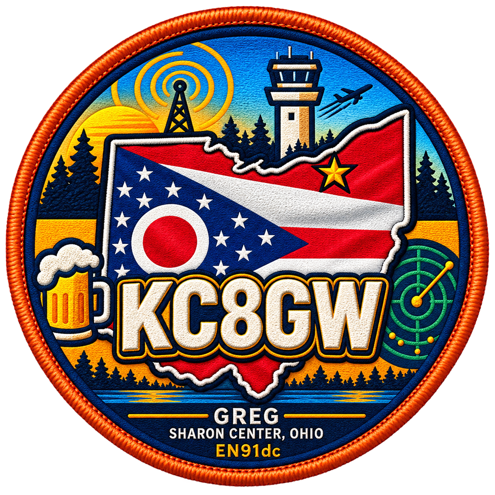

Feeder Dashboard
Open the receiver dashboard while connected to the KC8GW home network.
Open Local ADS-B Map
AMATEUR EXTRA · GMRS WSGZ373
COMMUNICATE · FLY · EXPLORE
AIRCRAFT TRACKING
Links and status tools for the KC8GW aircraft-tracking projects.
Open the receiver dashboard while connected to the KC8GW home network.
Open Local ADS-B MapFor live aircraft positions, use the local receiver map or one of the public tracking services.